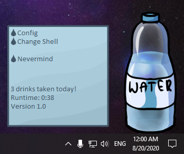
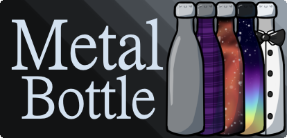
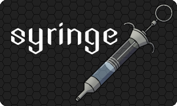
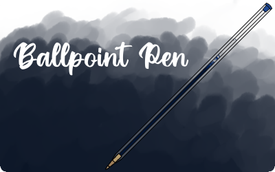
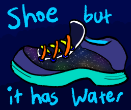
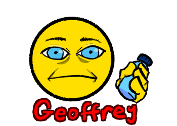
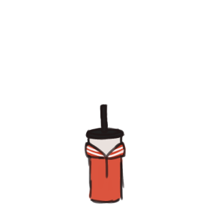

Hydrate

Hydrate is a collab made with Zdzisiu from the Ukagaka Dream Team Discord server! It reminds you to drink water at a customizable interval, any amount of minutes up to 5 hours!
Hydrate can also send your drinking stats to other compatible ghosts, so they could potentially make comments about your drinking habits! If you're a ghost dev and you're interested in making your ghost compatible, check the information files in Hydrate's folder.
Hydrate also has a robust shell system; any new shells added will automatically be listed in the Change Shell menu, and if they have any dressups you'll get a Change Design menu with the dressups sorted into categories! If you're interested in making your own shell for Hydrate, check the information files in Hydrate's folder. I'd be glad to link any new shells on this page!
Member of the Ukagaka/Ghost Development and Download webring
Previous
Random
Next
Shells
Teacup
A teacup shell made by Zdzisiu. Comes with an optional rainbow decoration!
Alkohol
A shell based on a martini glass, by Zdzisiu. Comes with multiple colors and an easter egg if you get a high drink streak!
Potion
A potion shell made by Zdzisiu. Comes in lots of pretty colors, with a few alternate labels! Restore your HP or Mana while you hydrate!
Poison
A poison shell made by Zdzisiu. Comes in lots of pretty colors, with a few alternate labels! Probably better for coating your weapon, or for sneaking into your enemies' food, than drinking.
Rilakkuma
A cute shell of a coffee cup, by Yuyudev! Who wouldn't want their beverage adorned with an adorable bear face?
LOL Mug
Just what it says on the tin! Made by Yuyudev, this delightful mug comes in 13 vibrant colors!

A reusable metal bottle in a variety of designs, by me! Customize your cap color and bottle pattern!

Syringe
A dual-purpose Hydrate shell AND Needle shell! Made by me for the 8/20 Hydrate Shell Jam (2022)!

Ballpoint Pen
A simple ballpoint pen in a variety of colors, which works best on dark backgrounds! Made by me for the 8/20 Hydrate Shell Jam (2022)!
Fishbowl
A fishbowl by Zdzisiu, complete with fish and multiple straws! Great at large sizes and small sizes!
Lava in a Cup
The hottest Hydrate shell yet, made by Zdzisiu! Possibly hazardous to other ghosts!
Martini Gore
A horror shell by Zdzisiu featuring an eye floating in a glass of blood! Perfect for all the vampires in your life!
Ramune
A bottle of ramune by likikoari, in a variety of flavors!
Milk
A milk carton in a variety of flavors by Aegisghosts! Try the space milk, it's out of this world!
Can
A soda can in a variety of flavors by Aegisghosts! Don't shake it!
Bishoujo Hydrate
A glass shaped like an anime girl by Yuyudev, complete with giant straw! Made for the 8/20 Hydrate Shell Jam (2022)!

Not Haunted Water-Based Vegetarian Shoe
A water-based vegetarian shoe made by Bitzen that is most definitely not haunted! Use at your own risk! Made for the 8/20 Hydrate Shell Jam (2022)!

Geoffrey
It's Geoffrey! Also made by Bitzen, for the 8/20 Hydrate Shell Jam (2022)!

Bowie Bottle
A bottle shell made by StrangelyKai, styled after their WIP ghost Bowie!